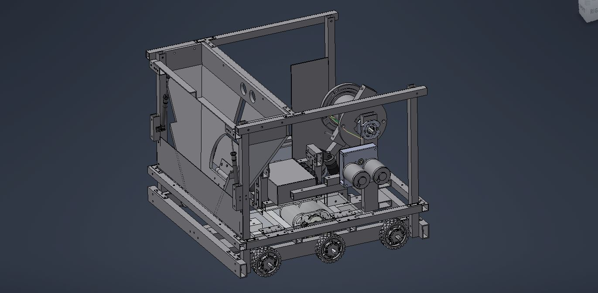
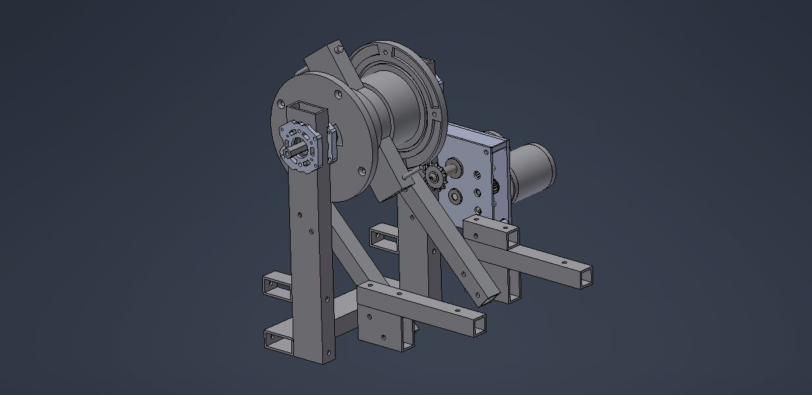
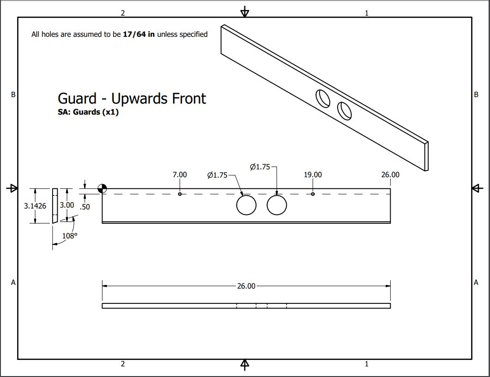
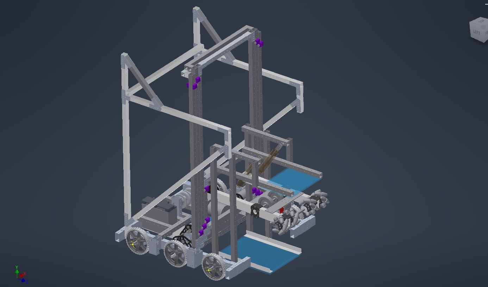
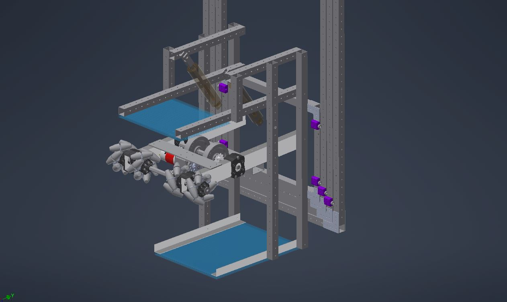
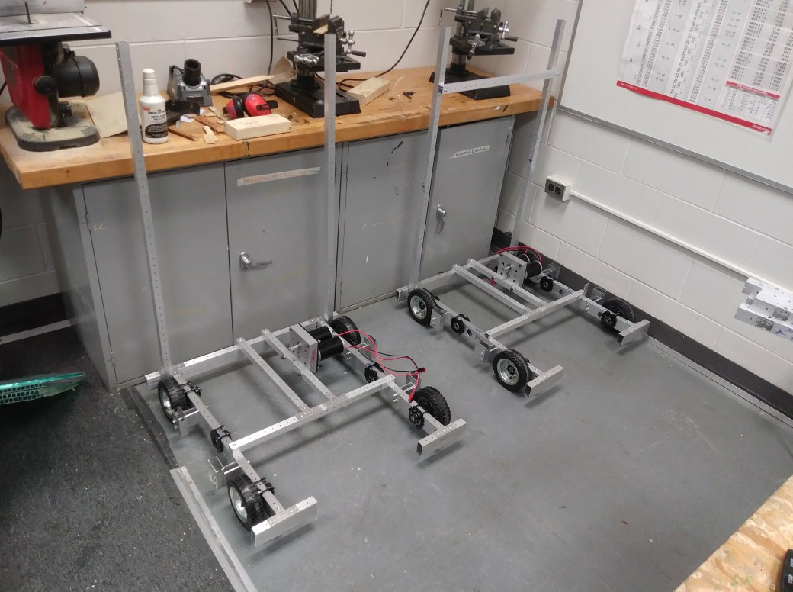

FIRST Robotics
Above: Full robot assembly from our 2017 season, modeled in Autodesk Inventor. Robot was constructed mostly out of 1/16" and 1/8" thick 1"x1" and 1"x2" aluminum rectangular tubing.

Above: Close-up of the winch assembly from our 2017 robot. The gearbox and sprockets are geared down for more torque.

Above: Technical drawing for a part of our 2017 robot.

Above: Full robot assembly from our 2019 season, modeled in Autodesk Inventor. Robot was constructed mostly out of 1/16" and 1/8" thick 1"x1" and 1"x2" aluminum rectangular tubing. This robot won us our first event and took us to the world championship, where we placed 8th in our division.

Above: Close-up of the ball intake and lift assembly from our 2019 robot. The ball intake is connected to the "elevator", which lifts it up, allowing the robot to dispense balls higher up. The intake is also able to fold upward using the two pneumatic pistons (pictured as the brown translucent cylinders), so that it is vertical. We designed it to do this to allow the intake assembly to be within the robot's frame boundary to comply with rules.

Above: The incomplete chassis of our competition robot and our practice robot from 2019, during the assembly of the robot.